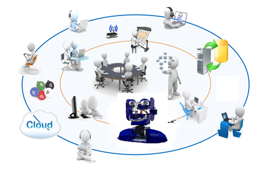

 |
Démarche de projet Extrait du référentiel: Les ambitions de la pédagogie de projet. L'élève apprend en faisant et fait pour apprendre. Il devient ainsi un des acteurs d'une pédagogie collaborative inter-personnelle, inter-disciplinaire et même inter-générationnelle dans une nouvelle relation avec ses professeurs. L'élève vit une aventure collective. Il recherche des compromis et effectue des choix pour répondre à un besoin dans un contexte sociétal donné économique, écologique, culturel, etc.. Il vit une pédagogie de la responsabilisation à travers son engagement personnel dans un projet qui s'inscrit dans la durée ce qui induit le concept de contractualisation, associé à la répartition de tâches collaboratives organisées, pour atteindre un objectif partagé. Chaque élève, au sein du groupe de travail auquel il participe, est conduit à opérer des choix, les justifie. |
Créé avec HelpNDoc Personal Edition: Outils facile d'utilisation pour créer des aides HTML et des sites web